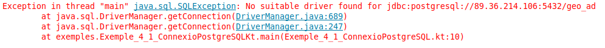

5.1 - Establiment de la connexió
Un objecte de la classe Connection (de l'API JDBC) representarà una connexió a la Base de Dades d'un determinat SGBD. Haurem de tenir el controlador del SGBD inclós en el projecte.
L'objecte Connection l'obtindrem a partir del DriverManager, que havíem comentat que és capaç de gestionar tots els drivers carregats en memòria. El mètode que utilitzarem del DriverManager és el getConnection(url,usuari,password), on li passarem les dades de connexió a la Base de Dades d'aquesta manera:
- URL: cadena de connexió seguint el protocol JDBC. Comença sempre per jdbc, el nom del SGBD (separat per dos punts), i la manera d'arribar a la BD, també separat per 2 punts. Aquesta manera d'arribar a la BD dependrà del controlador del SGBD, però d'alguna manera harem d'especificar el servidor, el port de connexió i el nom de la BD o esquema a connectar.
- Usuari i contrasenya: encara que en alguns SGBD (com per exemple SQLite) no seran necessaris.
Aquestes són les url que utilitzarem:
- PostgreSQL: per connectar-nos al servidor situal a l'adreça 89.36.214.106, que escolta el port per defecte (5432), i a la Base de Dades anomenada geo_ad, la cadena serà:
jdbc:postgresql://89.36.214.106:5432/geo_ad
- MySQL: el servidor és el mateix de PostgreSQL, el port per defecte és 3306, i si volem connectar a la Base de Dades factura:
jdbc:mysql://89.36.214.106:3306/factura
- SQLite: no haurem d'especificar ni servidor ni port (ni posteriorment usuari ni contrasenya); únicament el nom del fitxer amb la ruta. Si volem connectar a la Base de Dades situada en el directori /home/usuari/BD_SQLite, i anomenada proveta.sqlite:
jdbc:sqlite:/home/usuari/BD_SQLite/proveta.sqlite
Mirem tres exemple de connexió, un per a cada Base de Dades de prova que tenim en els diferents SGBD que ens hem plantejat connectar. Observeu com només hem canviat la URL, a banda de l'usuari i contrasenya, clar (en SQLite no hi haurà). I el millor de tot és que una vegada feta la connexió, farem el mateix tractament siga quin siga el SGBD al qual ens hem connectat, com veurem amb posterioritat.
En aquestos exemples, tan sols fem la connexió. Si no es produeix cap error és que s'ha pogut connectar.
- PostgreSQL
Guardeu el següent codi en un fitxer Kotlin anomenat Exemple_4_1_ConnexioPostgreSQL.kt:
package exemples
import java.sql.DriverManager
fun main(args: Array<String>) {
val url = "jdbc:postgresql://89.36.214.106:5432/geo_ad"
val usuari = "geo_ad"
val password = "geo_ad"
val con = DriverManager.getConnection(url, usuari, password)
System.out.println("Connexió completada")
con.close()
}Si ens hem oblidat d'incorporar el Driver al projecte, ens donarà el següent error:

que com es veu, ens està indicant que no ha pogut trobar el driver per a eixa URL. Senzillament incorporarem el driver de PostgreSQL en les F4 -> Modules -> Dependencies
- MySQL
Guardeu el següent codi en un fitxer Kotlin anomenat Exemple_4_2_ConnexioMySQL.kt:
package exemples
import java.sql.DriverManager
fun main(args: Array<String>) {
val url = "jdbc:mysql://89.36.214.106:3306/factura"
val usuari = "factura"
val password = "factura"
val con = DriverManager.getConnection(url, usuari, password)
System.out.println("Connexió completada")
con.close()
}- SQLite
Guardeu el següent codi en un fitxer Kotlin anomenat Exemple_4_3_ConnexioSQLite.kt:
package exemples
import java.sql.DriverManager
fun main(args: Array<String>) {
val url = "jdbc:sqlite:proveta.sqlite"
val con = DriverManager.getConnection(url)
System.out.println("Connexió completada")
con.close()
}Com que no hem posat ruta, utilitzarà el fitxer proveta.sqlite en el directori actiu, és a dir, en l'arrel del projecte. Si no existia, el crearà. També podríem posar la ruta d'aquesta manera:
String url = "jdbc:sqlite:/home/usuari/BD_SQLite/proveta.sqlite";
en aquest cas haureu de cuidar que existesca la ruta del fitxer, sinó es produirà una SQLException
Observem les següents qüestions en els quatre programes equivalents anteriors:
- El DriverManager és capaç de trobar el driver adequat a través de la url proporcionada (sobretot si el driver està carregat en memòria), i és qui ens proporciona l'objecte Connection per mig del mètode getConnection(). Hi ha una altra manera d'obtenir el Connection per mig de l'objecte Driver, però també serà passant indirectament pel DriverManager. Ens aconformarem amb la manera que hem connectat
- Si no es troba la classe del driver (per no tenir-lo en les llibreries del projecte, o haver escrit malament el seu nom) es produirà l'excepció ClassNotFoundException.
- Si no es pot establir la connexió per alguna raó es produirà l'excepció SQLException.
- L'objecte Connection mantindrà una connexió amb la Base de Dades des del moment de la creació fins el moment de tancar-la amb close(). És molt important tancar la connexió, no solament per alliberar la memòria del nostre ordinador (que en tancar l'aplicació s'alliberaria), sinó sobretot per tancar la sessió oberta en el Servidor de Bases de Dades.
- En el cas de SQLite només s'ha d'especificar la url. No hem dit ni usuari ni contrasenya, que no tenen sentit en aquest SGBD monousuari.
Llicenciat sota la Llicència Creative Commons Reconeixement CompartirIgual 2.5